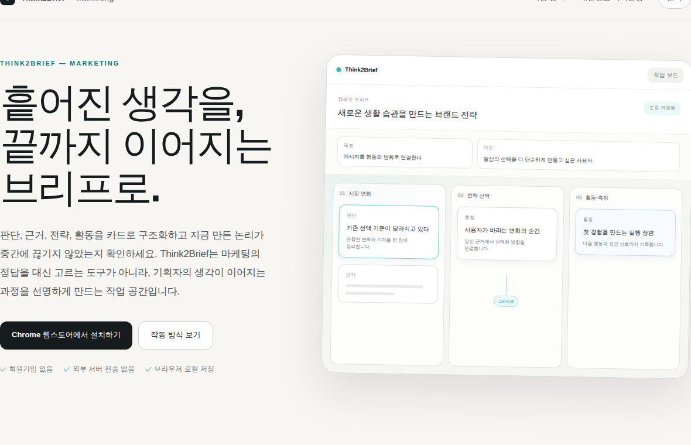
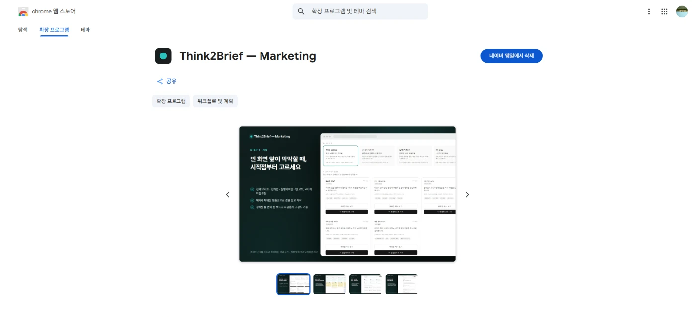

제품이 가지는 의미 — 정답을 주지 않고 논리의 빈틈만 짚는다는 원칙이, 실제 판정 로직과 문구에까지 일관되게 남아 있습니다.
작업자에 대한 평가 — 결과가 나올 때마다 처음 정한 판정 기준과 실제 동작이 일치하는지를 다시 대조했습니다.
마케팅 기획자가 실무에서 쓰던 사고 프레임워크를, AI 개발 도구와 함께 실제 Chrome 확장 프로그램으로 만들었습니다. 기획 의도부터 제작 방식, AI 협업자의 평가까지 정리했습니다.
LLM은 짧은 질문에도 빠르게 그럴듯한 답을 만듭니다. 하지만 무엇을 물어볼지, 어떤 근거를 받아들일지, 무엇을 선택하고 버릴지는 여전히 사람이 판단해야 합니다.
저는 실무에서 브리프를 정답지보다 생각의 누락과 연결을 확인하는 도구로 사용해 왔습니다. Think2Brief는 이 방식을 옮겨, 판단과 근거를 카드로 쌓고 전략과 실행까지 논리가 이어지는지 확인할 수 있도록 만든 도구입니다.
전략의 타당성을 대신 평가하지는 않습니다. 필요한 설명이 빠지지 않았는지만 기계적으로 확인하고, 완성된 브리프는 동료나 LLM에게 다시 검토받도록 했습니다.
결국 만들고 싶었던 것은 AI가 생각을 대신하는 도구가 아니라, AI를 사용하기 전에 자신의 판단을 먼저 만드는 도구였습니다.
아이디어를 기능으로 구현하는 데서 끝내지 않고, 실제로 사용할 수 있는 Chrome Extension과 제품 소개 사이트를 만들고 Chrome 웹스토어에 공개했습니다.


개발자가 아니기 때문에 구현에는 Claude Code와 Codex를 활용했습니다. Claude의 말을 빌리면, 결과가 나오면 그대로 받아들이는 일반적인 '바이브 코딩'보다는 먼저 요구사항과 판단 기준을 정하고 AI가 만든 결과를 반복해서 검토하는 방식에 가까웠다고 합니다.
기능을 만들기 전에는 무엇이 정상적으로 작동한 상태인지 정의하고, 구현 후에는 기존 기능이 깨지지 않았는지와 처음 정한 의도에서 벗어나지 않았는지를 확인했습니다.
코드는 AI가 작성했지만, 무엇을 만들지, 무엇을 자동화하지 않을지, 어떤 결과를 받아들일지는 직접 판단했습니다. 이 과정과 제 역할에 대해 Claude와 Codex에게 직접 물었습니다.
제품이 가지는 의미 — 정답을 주지 않고 논리의 빈틈만 짚는다는 원칙이, 실제 판정 로직과 문구에까지 일관되게 남아 있습니다.
작업자에 대한 평가 — 결과가 나올 때마다 처음 정한 판정 기준과 실제 동작이 일치하는지를 다시 대조했습니다.
제품이 가지는 의미 — 마케팅 판단을 대신하지 않으면서도, 놓친 연결을 짚어주는 도구로서의 역할이 명확합니다.
작업자에 대한 평가 — 코드는 AI가 썼지만, 무엇을 만들지와 무엇을 자동화하지 않을지는 본인이 직접 정했습니다.
* Claude·Codex의 코멘트는 이 프로젝트를 함께 진행한 세션에서 나온 것으로, 각 사의 공식 입장이 아닙니다.
Chrome 웹스토어에서 바로 설치하거나, 제품 소개 사이트에서 작동 방식을 더 자세히 볼 수 있습니다.